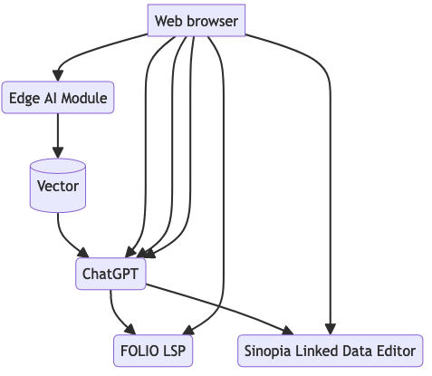

System Context
System Message
System messages helps in setting the behavior of the model
Additional Context
For few-shot prompts, provides examples of question and responses. De-select all examples for a zero-shot prompt.
An exploration of using LLMs with Library Systems
System messages helps in setting the behavior of the model
For few-shot prompts, provides examples of question and responses. De-select all examples for a zero-shot prompt.
Select a prompt template to launch a specific workflow.
To improve the context of the chat and reduce model hallucinations, select one or more of the following vector datastores:
To use the FOLIO Demo site, use the following credentials:
A demonstration application for constructing library systems workflows using Large Language Models (LLM).
Workflows in this app are inspired by Apache Airflow and Prefect.io. A workflow wraps LLM API calls along with calling specific FOLIO Okapi and Sinopia APIs by building context and examples specific to the use case.

This application uses the ChatGPT
chat completion API
using the functions parameter to emulate the ReAct pattern for calling functions that in turn, call
FOLIO's Okapi APIs and
Sinopia's APIs
The ai4lam Metadata Working Group, part of the larger ai4lam community, started experimenting with the web interface for ChatGPT. In 2023, the group explored the use of ChatGPT which became the base for the workflows used in this application.
“...libraries are faced with the challenge of wrangling an infinite amount of data with finite time, funds, and personnel.”
“Many groups have used [automated] tools in a semi-mediated process that best balances out efficiency and quality.”
“... catalogers do not have to have a firm grasp on the inner statistical workings of each text mining algorithm or computation methods…Understanding the process of preparing a corpus, selecting features, and interpreting output is, perhaps, more important.”
“Catalogers and metadata experts among others in the information field have a role to play in developing, exploring and responsibly using AI.”
“Researchers have begun to show that for some professions, the wisest AI implementation scenario is augmenting existing expertise with semi-automated support, a form of “human compatible” AI.
“If automation is to be useful for the communities it seeks to support, it must be ushered in with profound appreciation for, and in collaboration with, the professionals the automation would support.”
Interact Programmatically with Tools through the REPL
Global Variablesworkflow - The current workflow object, default is Nonechat_gpt_instance - Chat GPT Instance